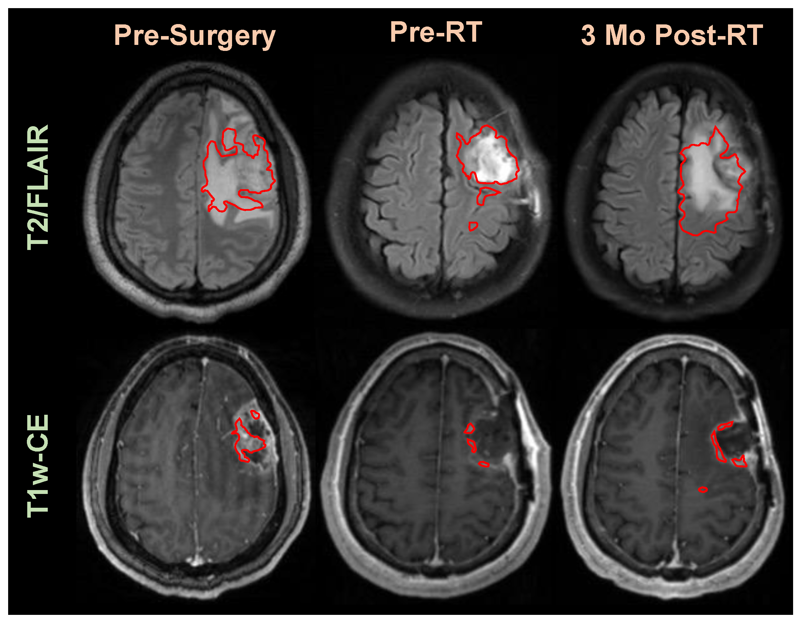
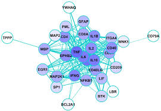
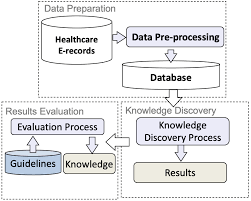
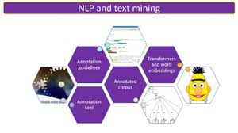

The NLP group at IISERB aims to facilitate biomedical discovery by developing, evaluating, and applying novel informatics methods and software to extract, compile and analyze heterogeneous clinical text data. The group has worked on a variety of challenges faced in the clinical NLP domain including Named entity recognition, text mining and sentiment analysis, Machine Learning, and many more.
Our Focus Areas
Automatic Tumor Contouring
Head and Neck Cancer (HNC) is the most common cancer in India, with over 500,000 new cases worldwide annually. Radiation therapy is frequently recommended, but requires precise segmentation of tumors in CT scans. This process is labor-intensive and prone to inter-observer variability. We aim to develop a deep learning-based image segmentation framework for automatic tumor contouring to improve accuracy and efficiency in radiotherapy planning.
Biomedical Literature Mining
Biomedical literature contains valuable domain-specific knowledge. Our research focuses on NLP techniques for automated information extraction, knowledge graph construction, and biomarker identification. We develop transformer-based models to analyze PubMed and other biomedical sources for efficient knowledge discovery.
Knowledge Discovery in Social Media
Social media platforms provide real-time insights into public health trends. Our research aims to develop NLP frameworks to analyze social media data for early detection of disease outbreaks, mental health issues, and healthcare access challenges. We employ machine learning models to extract meaningful patterns and predict public health concerns.
Clinical Text Mining
Clinical notes contain crucial information about patients, including diagnoses, medications, and treatment plans. We develop NLP frameworks for automated text mining from clinical reports to support early disease prediction, adverse event detection, and improved patient care. Our research also integrates image and text-based analysis for enhanced radiology diagnostics.
We publish cutting-edge research in leading journals and conferences. Check out our Research section for more details.